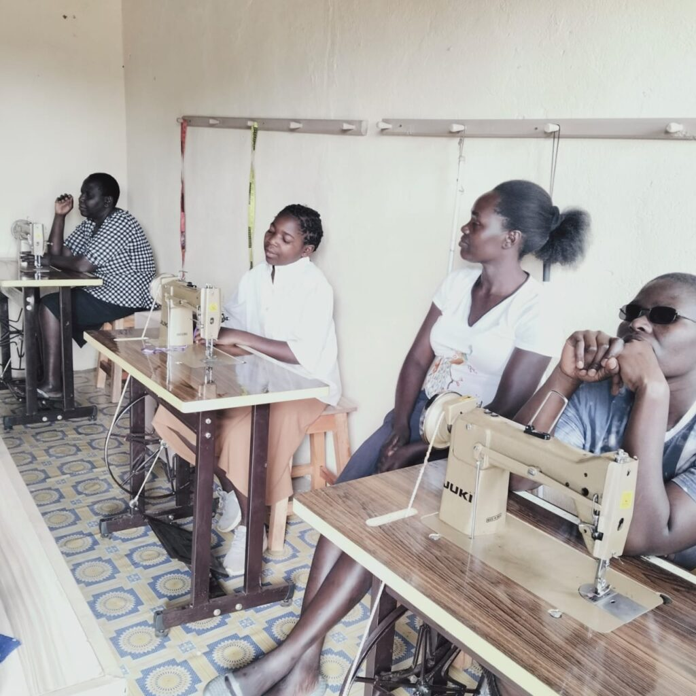
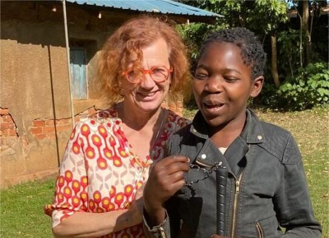
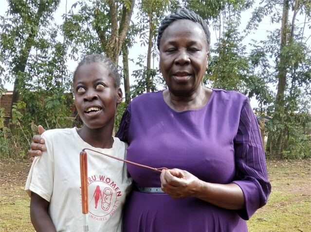

Kiminini Nuru Women is a community-based organization founded in 2024 in Kiminini, Kenya. We are dedicated to empowering blind and partially sighted women through practical skills training, health education, and inclusive community engagement.
Our mission is to create lasting independence for visually impaired women by providing life skills, vocational training, and opportunities for leadership. We believe that disability should never limit dignity or independence.
Our Vision
Through our initiatives, women gain the confidence, skills, and tools to build sustainable livelihoods and participate fully in society.

Our Values
Our values — dignity, respect, sustainability, and inclusion — guide everything we do, ensuring a people-centered and transformative approach.
Our Story
Kiminini Nuru Women began as a small idea born from a big challenge in 2024. A group of local and international partners saw the struggles faced by visually impaired women — limited access to education, few job opportunities, and almost no support for independence.
2024: Founding
Nuru was founded with one sewing machine and a handful of determined women in a borrowed room.
First Training
Using tactile methods, the first batch of women learned to produce reusable sanitary pads, creating income and impact.
Expansion
We trained dozens of women, launched health education in schools, and collaborated with local leaders for inclusion.
Our Team
Behind every Nuru success story is a dedicated team of professionals and partners committed to inclusion and transformation.

Michaela Schwarz
Expert in Orientation, Mobility, and Rehabilitation for the Visually Impaired (Germany). Leads training design for accessibility.
My name is Michaela Schwarz, and I am a trained rehabilitation teacher for the blind and visually impaired, specializing in daily living skills (LPF) and orientation and mobility (O&M).
In 2024, I first learned about the Nuru Women project in Germany. The project consists of 15 blind women between the ages of 24 and 30, each with very different life experiences. Due to their visual impairments, all of them had to leave the education system prematurely, meaning none of these young women have had the opportunity to pursue advanced education. Support systems comparable to those in Germany do not exist in Kenya.
Sewing fabric sanitary pads is an excellent opportunity to provide the Nuru Women with a real chance at independent living. Therefore, I support the project by providing guidance on accessible design and donating white canes and edge filter glasses.
However, my most important contribution is my hands-on work on-site. In my lessons, I teach orientation techniques at the sewing machine, in the workshop, and around the premises, as well as different long cane techniques. Additionally, the women learn specific sewing techniques adapted for the visually impaired, such as assembling fabric pieces and safely operating a sewing machine without injury.
Over time, I have come to know each woman in her personal living environment. I am familiar with their individual strengths and can provide personalized support within their cultural framework.
This work is both a challenging and rewarding task. I would greatly appreciate any support for these women, whether through the donation of assistive devices, material contributions, or professional and educational collaboration.
Michael Ongaro
Project Lead and Registered Nurse (Kenya & USA). Oversees program delivery and health education.
From an early age, I saw in my neighborhood how many women struggled due to limited access to menstrual products. Witnessing this reality shaped my concern for women's health and guided me toward a career dedicated to nursing and community development.
In my work as a nurse, I have engaged closely with communities, focusing on health promotion and illness prevention. Along the way, I met women whose potential was limited not by their abilities but by a lack of opportunity and access. These encounters deepened my belief that good health and empowerment are inseparable foundations for equality.
My understanding of leadership and social impact grew through the Mandela Washington Fellowship in the United States, where I studied Business and Entrepreneurship at Drake University, and through earlier training at the Young African Leaders Initiative, Regional Leadership Center, East Africa. Both experiences strengthened my commitment to creating sustainable, community driven solutions that promote inclusion and self-reliance.
In 2024, I met a group of visually impaired women in Kiminini, Kenya, women of great strength and determination who wanted to build independent lives through meaningful work. Their spirit inspired the creation of the Kiminini Nuru Women Project, an initiative that trains visually impaired women to produce reusable sanitary pads and earn a sustainable income.
Today, I lead this initiative with the conviction that access, whether to health, education, or opportunity, is the true foundation of dignity. As the women continue to expand their skills, share knowledge, and support one another, I look forward to a future where inclusion and independence become a reality for many more.
Michael Ongaro, USRN, YALI RLC EA 42', MWF 2022

Elizabeth Naika
Project Coordinator (Kenya). Manages operations and trainee support for seamless project execution.
I am Elizabeth, the Founder and Director of this initiative, built to empower visually impaired women with skills, independence, and dignity. What started as a small effort to break barriers has now become a movement—one that is changing lives and shaping a future where no woman is left behind.
Today, Nuru Women is more than just a project. It is a safe space where women are trained in sewing, knitting, and the production of reusable sanitary pads. It is a place where ability triumphs over limitation, where challenges become stepping stones to independence. We have seen incredible growth, but our journey is far from over.
The future we envision is one of sustainability and expansion. We aim to scale up our production, enhance training programs, and introduce more assistive technologies that make our workspaces truly inclusive. We dream of creating opportunities beyond our walls—where these women can lead, advocate, and inspire change in their communities.
This mission is bigger than us, and we invite you to be a part of it. Whether through partnerships, mentorship, donations, or simply sharing our story, your support fuels our vision. Together, we are not just changing lives—we are redefining what's possible.
Join us. The future is bright.
Our Impact
From a small workshop to a growing movement, our journey has created real, measurable impact.
50+
Women Trained
10,000+
Reusable Pads Produced
15
Workshops Conducted
Jane A.'s Story
"This training gave me skills and confidence — I can now support my children," says Jane, who earns income sewing pads.
Mary K.'s Story
"I have learned that I am capable. I can teach, I can lead, I can inspire others," shares Mary, now a community mentor.
Our Vision for the Future
Our vision is to create a fully accessible training and production center, a model replicable across Kenya and beyond. We aim to expand our curriculum, establish a cooperative for product sales, and advocate for disability-friendly policies.
Join us — your support turns empowerment into independence.
.jpeg)
.jpeg)
.jpeg)